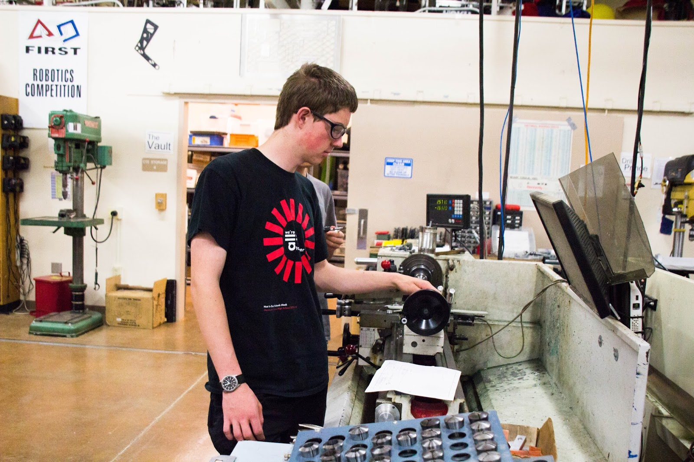
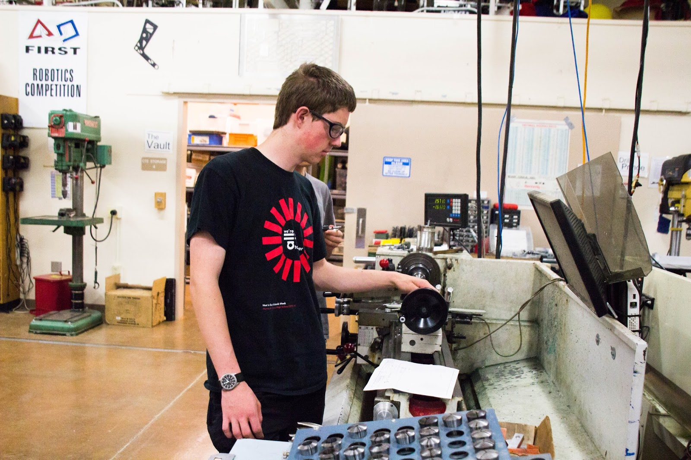
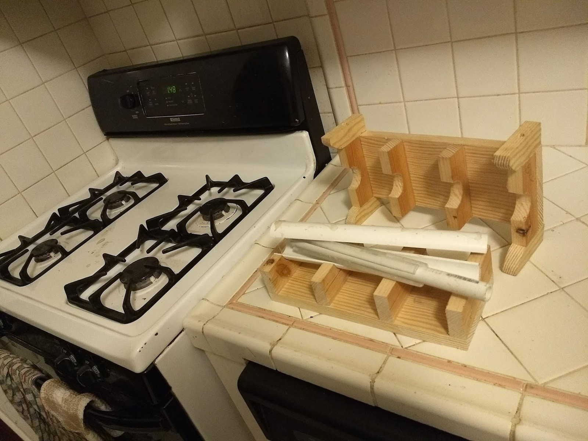
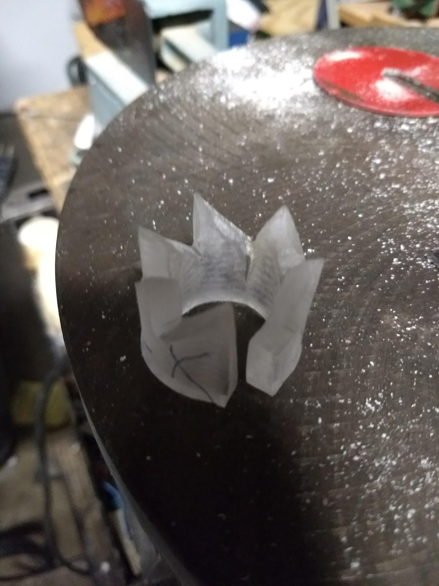

FIRST Robotics
Table
- Team
I was part of team 192 (Gunn Robotics Team aka GRT) - Student Run
We pride ouselves on being a student run organization. All design and fabrication for the robot is done in house by students. While the team does have mentors they are there for liabilty and advice only. - Awards
The team won the 2017 North Arizona Regional - My Work
For the 2017 robot I primarily worked on two systems: - The Climber
While many teams had the idea of a velcro covered roller, we had one innovation that made ours significantly more reliable. We tied a slip knot in the strap so that the spool had a few winds before the weight of the robot was on it. We also spread this knowledge to a number of other teams to improve their reliablity as well. - The Gear Box
This is one of the most effective uses of a prototype I've ever been involved in. I created a modular prototype that allowed us to find the exact limits of the angle at which the box mechinism could rest. - Rookie Training
Being a student run organization, knowledge needs to be passed down between students. We spend most of the non competition season training the next generation of teammates.
- Goal
The target product of this project was to create a folding table that required minimal action to deploy and pack up. - Design
This mechinism relies on telescoping legs that fall out of the bottom, and then extend, but lock when the table is placed down on them. This mechinism is borrowed from click-pens. - Fabrication
The hardest part of this project was fabricating the parts of the telescoping mechinism. The process we ended up using involved cuting the basic profile in arcylic sheet, heat forming the parts to be round, and then filing them to finial dimentions. - Reflections
Conceptualy the main problem with the design is stability. A relitivly small bump can cause the legs to retract. The fabrication process was less than ideal, but could have easily been replaced with casting for a mass produced version. Overall an interesting concept, but few people care enough to save the few seconds required to manualy unfold table legs.

 



Process

Blueprint
The origional design idea, drawing inspiration from click pens.

CAD
This CAD demonstrates just how much of a pain it will be to fabricate all of these parts by any method other than casting.

Mold
The rounding mold had to be reinforced with wood, because the residual heat from the acrylic softened the pvc enough to cause problems.

Part
After bending the teeth had to be filed back into shape. The twisting from the heat forming left the top surfaces at the wrong angles.